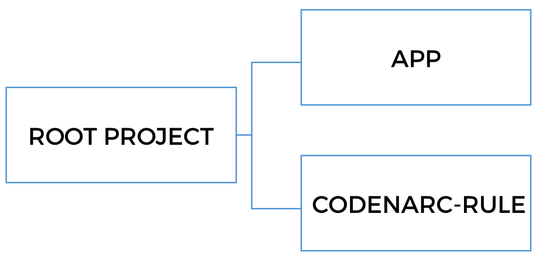
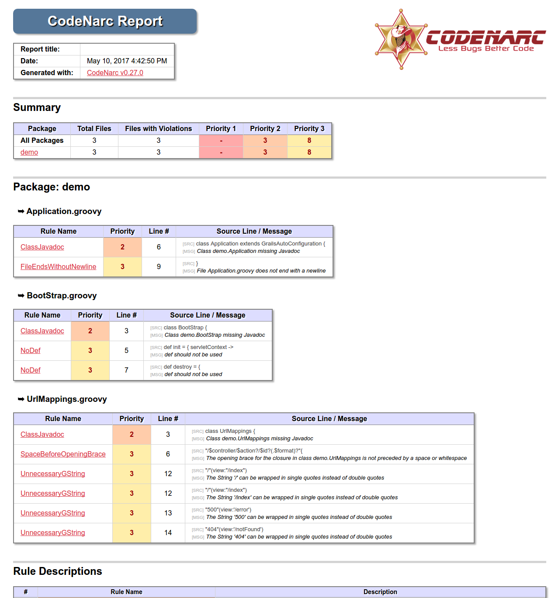
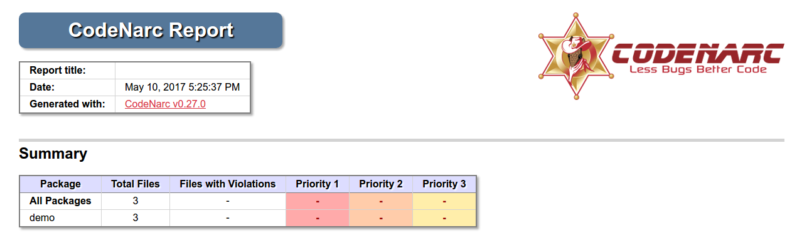
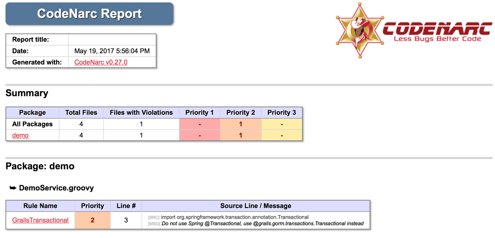

Static code analysis in a Grails app with CodeNarc
In this guide, you'll learn how to improve your code with static analysis using CodeNarc.
Authors: Iván López
Grails Version: 4
1 Grails Training
Grails Training - Developed and delivered by the folks who created and actively maintain the Grails framework!.
2 Getting Started
When we write code, it’s important to follow some rules, right practices, style rules, etc. However, sometimes it is not that simple. It is even more important when we work in a team, in which every member has his preferences. One way of improving this is adding a static analysis tool for the code.
In this guide, you are going to install and configure Codenarc to help you improve the quality of your Grails code, and you are also going to learn how to create a custom CodeNarc rule. CodeNarc analyzes the Groovy code and reports potential bugs and code problems.
2.1 What you will need
To complete this guide, you will need the following:
-
Some time on your hands
-
A decent text editor or IDE
-
JDK 11 or greater installed with
JAVA_HOMEconfigured appropriately
2.2 How to complete the guide
To get started do the following:
-
Download and unzip the source
or
-
Clone the Git repository:
git clone https://github.com/grails-guides/grails-codenarc.git
The Grails guides repositories contain two folders:
-
initialInitial project. Often a simple Grails app with some additional code to give you a head-start. -
completeA completed example. It is the result of working through the steps presented by the guide and applying those changes to theinitialfolder.
To complete the guide, go to the initial folder
-
cdintograils-guides/grails-codenarc/initial
and follow the instructions in the next sections.
You can go right to the completed example if you cd into grails-guides/grails-codenarc/complete
|
3 Writing the Application
3.1 Multi-Project Build
We are going to setup a multi-project build with a Grails application and a custom CodeNarc Rule as shown in the next image:

Check our Grails Multi-Project Build Guide, to learn more.
3.2 Rule Types
Current CodeNarc version (0.27.0) includes 348 rules divided in 22 categories:
-
Basic: For example to check that there are no empty
elseorfinallyblocks. -
Braces: How many times have you seen an
iforelsewith only one statement without the curly-braces? I personally don’t like code without curly-braces because it’s a source of bugs in the future. We can add the rules in this category to perform these checks. -
Convention: There are rules to check for some conventions: when we write an "inverted"
if, anifthat can be converted to an elvis operator,… -
Exceptions: Rules that will fail if, for example, we throw a
NullPointerException.
And there are many more categories to check for duplicated imports, unused variables, unnecessary ifs,… And of course there’s a specific category for Grails rules.
3.3 Adding CodeNarc to our project
Adding CodeNarc to our project is a simple task because there’s a Gradle plugin to do it.
Let’s modify build.gradle and add the following:
link:{sourcedir}/app/build.gradle[role=include]We encapsulate all the CodeNarc configuration in gradle/codenarc.gradle:
link:{sourcedir}/gradle/codenarc.gradle[role=include]| 1 | Apply the codenarc plugin. |
| 2 | Set the CodeNarc version we want to use. |
| 3 | Define the main file with the rules. By default CodeNarc uses config/codenarc/codenarc.xml but we don’t want to
write XML files, don’t we? |
| 4 | The report format we want. For a human-readable format we use html. If we want to integrate CodeNarc with, for
example, Jenkins we need to change it to xml. |
| 5 | We don’t want that the build fails when there’s only one violation. |
Then we need to create the rules file:
ruleset {
description 'Grails-CodeNarc Project RuleSet'
ruleset('rulesets/basic.xml')
ruleset('rulesets/braces.xml')
ruleset('rulesets/convention.xml')
ruleset('rulesets/design.xml')
ruleset('rulesets/dry.xml')
ruleset('rulesets/exceptions.xml')
ruleset('rulesets/formatting.xml')
ruleset('rulesets/generic.xml')
ruleset('rulesets/imports.xml')
ruleset('rulesets/naming.xml')
ruleset('rulesets/unnecessary.xml')
ruleset('rulesets/unused.xml')
ruleset('rulesets/grails.xml')
}With this configuration we can just run the check task.
$ ./gradlew app:check
:check UP-TO-DATE
:complete:codenarcMain
CodeNarc rule violations were found. See the report at: file:///home/ivan/workspaces/oci/guides/grails-codenarc/complete/app/build/reports/codenarc/main.html
:complete:codenarcTest NO-SOURCE
:complete:compileJava NO-SOURCE
:complete:compileGroovy UP-TO-DATE
:complete:buildProperties UP-TO-DATE
:complete:processResources UP-TO-DATE
:complete:classes UP-TO-DATE
:complete:compileTestJava NO-SOURCE
:complete:compileTestGroovy NO-SOURCE
:complete:processTestResources NO-SOURCE
:complete:testClasses UP-TO-DATE
:complete:test NO-SOURCE
:complete:check
Total time: 1.953 secsAnd we can open the test report to check the violations:

-
First, we have a section with the execution date and the CodeNarc version used.
-
Then there’s another section with a Summary with the total of files with violations and also the number of violations with priority 1, 2 and 3.
-
After that, there’s a section for each file in which we can see all the violations in the file with the line of code and a small fragment of it. The rule name is a link to a more detailed explanation.
Let’s fix the violations
There are different ways of fixing a CodeNarc violation:
-
Fixing the problem: As the name implies, just fix the violation.
-
Disabling the rule: Sometimes we don’t agree with that specific CodeNarc violation. We can disable it.
-
Ignoring the rule for that specific class or method: This case is when we don’t want to disable the rule but want to skip it only in a particular class or method.
Fix the problem
-
To fix the violation
FileEndsWithoutNewlineadd a new line at the end ofUrlMappingsfile. -
To fix the violation
SpaceBeforeOpeningBraceadd a space before the braces.
Disable the rule
For the case of ClassJavadoc and NoDef we can just disable the rules modifying the rules.groovy file:
ruleset {
description 'Grails-CodeNarc Project RuleSet'
...
ruleset('rulesets/convention.xml') {
'NoDef' {
enabled = false
}
}
...
ruleset('rulesets/formatting.xml') {
'ClassJavadoc' {
enabled = false
}
}
...
}Ignoring a rule
Finally, we can ignore a rule for a particular class. In this case, we’re going to ignore the UnnecessaryGString rule
for UrlMappings.groovy using @SuppressWarnings:
link:{sourcedir}/app/grails-app/controllers/demo/UrlMappings.groovy[role=include]Checking the result
Just execute again the check task and open the report to see that all the violations are gone:

3.4 Final configuration
If you install CodeNarc in a medium-big size project, which has not use any static analysis tool before, you may have hundreds or event thousands of violations. It is possible that your team has not been careful enough while writing code. Moreover, it is likely that CodeNarc default configuration contains some rules you don’t agree with. Rules which might not be a good fit for the team.
My advice is to review all the violations, read their documentation and then decide if you want to disable them, configure with another option and finally fix and respect them.
Once the team decides the rules and the configuration the next step is to choose the thresholds to make the build fail. These thresholds allow having successful builds with some violations but, once we reach these levels, the build will fail.
To do that, just edit the build.gradle file:
codenarc {
...
// We need to remove the following line
//ignoreFailures = true
maxPriority1Violations = 0
maxPriority2Violations = 5
maxPriority3Violations = 9
}With this configuration the build will fail once we reach these thresholds.
4 Writing a custom Rule
Although CodeNarc provides some rules specific for Grails, some times we may want to create our own rules.
In this example we’re going to create a rule to check that we use
grails.gorm.transactions.Transactional instead of
@org.springframework.transaction.annotation.Transactional.
As you probably know the Grails @Transactional annotation is better because it doesn’t create a runtime proxy. It’s an AST Transformation that it’s applied during compilation time, so there’s no runtime overhead. There’s also other features that the Grails annotation provides and
the Spring one don’t.
grails.gorm.transactions.Transactional is only available for the latest versions of GORM (this guide uses GORM {gormVersion}), for previous versions you should use @grails.transaction.Transactional.
|
The rule checks our code. If we use the Spring annotation, it adds a new violation to the report.
4.1 Creating the Rule
Create the project
We need to create a new Groovy project because we want to package the rule in its own jar file using Gradle.
link:{sourcedir}/codenarc-rule/build.gradle[role=include]| 1 | Only need CodeNarc dependency |
In order to be able to user this new CodeNarc rule in our Grails application we need to make sure that the jar file
is available in the classpath during the codenarcMain taks:
link:{sourcedir}/gradle/codenarc.gradle[role=include]| 1 | CodeNarc tasks depend on the jar being generated |
| 2 | Add the jar to the codenarcClasspath |
Define the rule
The first step is create a meta-information file with the information about the rule we want to create:
link:{sourcedir}/codenarc-rule/src/main/resources/rulesets/grails-extra.xml[role=include]| 1 | The description of the group of rules. |
| 2 | One rule element per rule we create. |
Second we create a properties file with the description of the rule in both plain text and html. The messages will be used in the html report:
link:{sourcedir}/codenarc-rule/src/main/resources/codenarc-messages.properties[role=include]Implement the rule
Finally, we implement the rule:
link:{sourcedir}/codenarc-rule/src/main/groovy/org/codenarc/rule/grails/GrailsTransactionalRule.groovy[role=include]| 1 | The rule needs to extend from AbstractAstVisitorRule |
| 2 | Define the violation priority |
| 3 | The name of the rule. It needs to be the same as defined previously in the meta-information file |
| 4 | The class that implements the rule |
| 5 | The visitor class needs to extend from AbstractAstVisitor |
| 6 | Check the annotations of the class and methods and in case that Spring @Transactional is used, add a new violation |
| 7 | Check the imports of the class and is case of Spring @Transactional is imported, add a new violation |
| 8 | It’s important to set the lineNumber of the node because if not, the violation won’t be added |
Testing
And of course we need to write tests to make sure that everything is working as expected:
link:{sourcedir}/codenarc-rule/src/test/groovy/org/codenarc/rule/grails/GrailsTransactionalRuleTest.groovy[role=include]| 1 | The test class needs to extend from AbstractRuleTestCase |
| 2 | Instantiate the rule we want to test |
| 3 | Write the source code we want to test as a String |
| 4 | In this case, as we use Grails @Transactional we expect no violations |
| 5 | As we use Spring @Transactional we expect to have one violation |
4.2 Checking the Rule in the Grails application
Once we have created the rule and it’s available on the classpath, it’s time to add it to the Grails application.
ruleset {
description 'Grails-CodeNarc Project RuleSet'
...
ruleset('rulesets/grails-extra.xml')
}Now we can create a service and use Spring @Transactional on it:
link:{sourcedir}/app/grails-app/services/demo/DemoService.groovy[role=include]And the final step is generating the CodeNarc report:

As we can see we have a new violation because the rule we created as been applied.